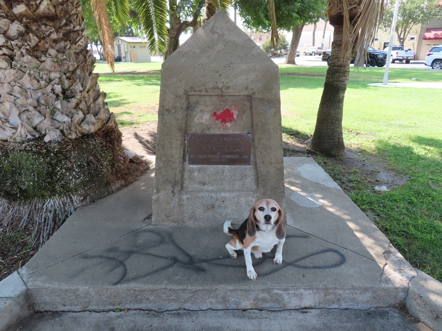

Patterson, CA, is the apricot capital of America, but this distinction is not celebrated anywhere except during a festival in June. It also has an unusual radial town plan, but that was difficult to make evident in a photograph. We settled for this monument to the town's namesake.
sanfrancisco Wallace Beagle